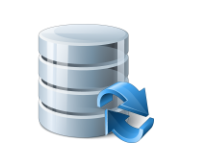
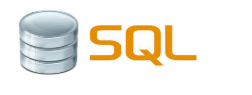
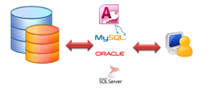
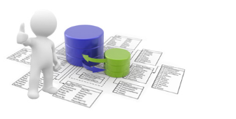
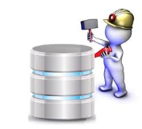

En este artículo encontrarás algunos conceptos básicos sobre bases de datos, gestores de bases de datos relacionales y SQL, también veremos algunas razones por las que deberíamos comenzar a aprender SQL. Actualmente el desarrollo de la tecnología informática y computacional produce un gran volumen de datos diariamente. Estos datos necesitan ser ordenados y almacenados para posteriormente poder ser usados o analizados, para esto se crearon grandes almacenes de datos llamados bases de datos. Si tu empresa o aplicación apunta a un futuro brillante, con grandes posibilidades de crecimiento, esta debe contar con una base de datos, la cual debe ajustarse a las necesidades particulares de cada tipo de empresa o aplicación. Pero, ¿qué es una base de datos? Una base de datos es una aplicación independiente que almacena una colección de datos. Así que podemos decir que se trata de una colección de información organizada por campos, registros y archivos, de manera que se pueda seleccionar rápidamente los fragmentos de datos que se necesiten.

Base de datos relacional.
Una base de datos es relacional cuando esta cumple con el modelo relacional, que se refiere a la relación que existe entre las distintas entidades o tablas de la base. También conocidas como sistemas de gestión de bases de datos relacionales
(RDBMS), las cuales nos permiten almacenar y gestionar gran cantidad de datos. Los datos se almacenan en diferentes tablas y las relaciones se establecen usando claves primarias u otras llaves conocidas como claves externas o foráneas. Existen
un sinnúmero de sistemas de gestión de bases de datos relacionales y cada una de ellas posee una forma diferente de manejar su data, algunos ejemplos de RDBMS son: Oracle, MySQL, SQL Server, entre otras.
Sin embargo, con el paso de los años, estos se fueron unificando y universalizando para dar paso a mejores técnicas y mejores formas de manejo. Así nació SQL. SQL (Structured Query Language) es un lenguaje estándar e interactivo de acceso a bases de datos relacionales que permite especificar diversos tipos de operaciones en ellas, gracias a la utilización del álgebra y de cálculos relacionales, el SQL brinda la posibilidad de realizar consultas con el objetivo de recuperar información de las bases de datos de manera sencilla. Las consultas toman la forma de un lenguaje de comandos que permite seleccionar, insertar, actualizar, averiguar la ubicación de los datos, y más.
SQL es un lenguaje declarativo estándar internacional de comunicación dentro de las bases de datos que nos permite a todos el acceso y manipulación de datos en una base de datos, y además se puede integrar a lenguajes de programación, por ejemplo ASP o PHP, y en combinación con cualquier base de datos específica, por ejemplo MySQL, SQL Server, MS Access, entre otras.
La gestión de Base de Datos es una habilidad cada vez más demandada y recompensada en el mundo de los negocios en nuestros días. El salario promedio para programadores de SQL en algunos países como E.E. U.U., de acuerdo con (Indeed.com), es $ 92.000 al año, para SQL DBA (administradores de bases de datos) pueden llegar a tener un salario promedio de $ 97.000 al año.
las habilidades en SQL para trabajar en programas y bases de datos se han hecho más necesarias, valiosas y recompensadas. Las empresas están buscando la ayuda de personas que conocen SQL. Ellos saben el valor que alguien experto en SQL aporta a su empresa y buscan emplear a estas personas. Desde los años 70, SQL se ha usado en cualquier base de datos relacionales en todo el mundo, su estructura y características se mantienen estables desde entonces.
En la base de datos, con añadir unos cambios simples lograrás grandes avances. SQL le da el poder para responder a cualquier pregunta que realices sobre tus datos, ya sea ¿Cuáles fueron las ventas del año pasado? ¿Cuál es la media de índice de satisfacción del cliente? ¿A qué tasa hemos reducido los gastos desde el verano pasado?. SQL transforma estas preguntas en forma de consultas y traerá los datos y mostrará la respuesta en forma de información.

En el futuro las compañías necesitarán cada vez más trabajadores con experiencia en el acceso y análisis de información, y SQL te posibilitará alcanzar esos conocimientos. ¿Qué esperas para empezar a aprender sobre bases de datos y el lenguaje SQL? DevCode
ofrece para ti el Curso de Base de Datos en MySQL. ¡Te esperamos para que empieces a fortalecer tus habilidades!
* Es un lenguaje Universal
* Es muy bien recompensado
* Tiene gran demanda laboral
* Es un lenguaje Estable
* Flexibilidad al acceder a los datos